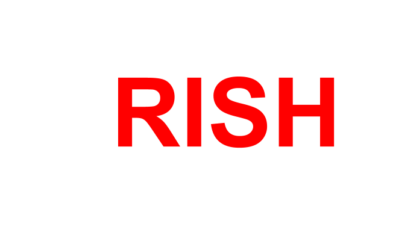
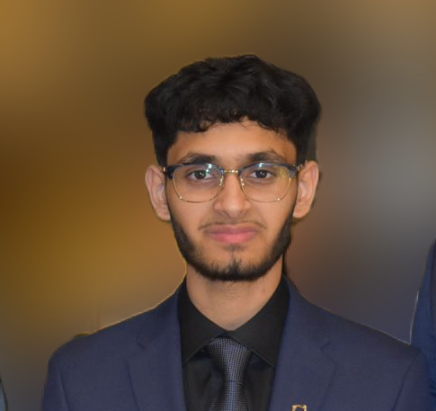
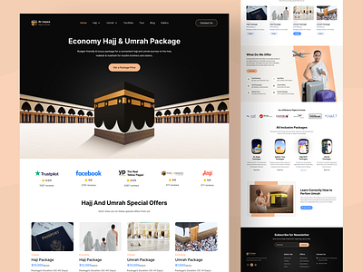

<!DOCTYPE html>
<html lang="en">
<head>
  <meta charset="UTF-8">
  <script src="https://cdn.jsdelivr.net/npm/typed.js@2.0.12"></script>
  <meta http-equiv="X-UA-Compatible" content="IE=edge">
  <meta name="viewport" content="width=device-width, initial-scale=1.0">
  <title>Arish Shahab</title>
  <link rel="stylesheet" href="style.css">
  <script src="https://kit.fontawesome.com/cc1b70b627.js" crossorigin="anonymous"></script>
</head>
<body>

  <div id="mainContent">
    <div id="header" class="parallax">
      </div>
    <div id="contact">
      </div>
  </div>


</body>
</html>

<div id="header" class="parallax">
  <div class="container">
    <nav>
      
      <ul id="sidemenu">
        <li><a href="#header">Home</a></li>
        <li><a href="#about">About</a></li>
        <li><a href="#services">Experience</a></li>
        <li><a href="#portfolio">Research/Projects</a></li>
        <li><a href="#contact">Contact</a></li>
        <i class="fa-solid fa-xmark" onclick="closemenu()"></i>
      </ul>
      <i class="fa-solid fa-bars" onclick="openmenu()"></i>
    </nav>
    <div class="header-text">
      <p id="typed-output"></p>
      <h1>Hi, I'm <span>Arish</span><br>Shahab From Oakville, ON</h1>
    </div>
  </div>
</div>

<!-- _____________________about________________  -->
<div id="about">
  <div class="container">
    <div class="row">
      <div class="about-col-1">
        

      </div>
      <div class="about-col-2">
        <h1 class="sub-title">About Me</h1>
        <h2👋 Hello world! My name is Arish Shahab, and I am an incoming student at McMaster University's Integrated Biomedical Engineering and Health Sciences (iBioMed) program. My journey is driven by a profound interest in merging biomedical engineering with cutting-edge medical research. <br>

          📚 At McMaster, I am exploring innovative solutions for healthcare, with a particular focus on smart drug delivery systems. My academic pursuits are complemented by hands-on research experiences, including collaborations with esteemed professors and involvement in projects that leverage AI and machine learning for optimized healthcare solutions. <br><br>
          
          🌱 My passion for biomedical engineering is fueled by a desire to make meaningful contributions to patient care and medical technology. I am dedicated to advancing research in drug delivery devices and automated medical injectors, aiming to bring transformative changes to healthcare systems. <br><br>
          
          🚀 Recently, I have been working on developing a smart liposomal drug delivery system for interstitial lung disease and exploring the impact of disinfectants on biomaterials used in joint replacements. As I continue my academic and professional journey, I am committed to applying my skills to real-world medical challenges and improving patient outcomes. <br><br>
          
          ⚽ Hobbies: Reading, Travelling, Playing Soccer, Research, Technology <br><br>
          💬 Let's Chat About: Biomedical Engineering, Drug Delivery Systems, AI in Healthcare, Medical Research, Lung Disease Treatment
      </h2>
        <div class="skills-container"> 
          <h2>Programming Languages</h2>
          <ul class="skill-list">
            <li>
              <a href="#">
                <i class="fas fa-code"></i>  <span>HTML/CSS</span>
              </a>
            </li>
            <li>
              <a href="#">
                <i class="fas fa-code"></i>  <span>Python</span>
              </a>
            </li>
            <li>
              <a href="#">
                <i class="fas fa-code"></i>  <span>Java</span>
              </a>
            </li>
            <li>
              <a href="#">
                <i class="fas fa-code"></i>  <span>Swift</span>
              </a>
            </li>
            <li>
              <a href="#">
                <i class="fas fa-code"></i>  <span>R Studio</span>
              </a>
            </li>
          </ul>
        </div>

        <h2>Education</h2>
<ul class="education-list">
  <li>
    <h3>2024 - 2028</h3>
    <h4>Integrated Biomedical Engineering and Health Sciences</h4>
    <p>McMaster University</p>
  </li>
  <li>
    <h3>2020 - 2024</h3>
    <h4>High School OSSD</h4>
    <p>Garth Webb Secondary School</p>
  </li>
</ul>
        <!-- <div class="skills-container"> 
          <h3>Medical Skills</h3>
          <ul class="skill-list">
            <li>
              <a href="#">
                <i class="fas fa-stethoscope"></i>  <span>PCR</span>
              </a>
            </li>
            <li>
              <a href="#">
                <i class="fas fa-syringe"></i>  <span>Gel Electropherosis</span>
              </a>
            </li>
            <li>
              <a href="#">
                <i class="fas fa-microscope"></i>  <span>Dilution</span>
              </a>
            </li>
            <li>
              <a href="#">
                <i class="fas fa-microscope"></i>  <span>Titration</span>
              </a>
            </li>
            <li>
              <a href="#">
                <i class="fas fa-microscope"></i>  <span>Medication Dispensing/Compounding</span>
              </a>
            </li>
          </ul>
        </div> -->
        <!-- <div class="tab-titles">
          <p class="tab-links active-link" onclick="opentab('skills')">Skills</p>
          <p class="tab-links" onclick="opentab('experience')">Experiences</p>
          <p class="tab-links" onclick="opentab('education')">Education</p>
        </div> -->
        <!-- <div class="tab-contents active-tab" id="skills">
          <ul>
            <li><span>Medical Researcher</span><br>Medical Researcher</li>
            <li><span>App Development</span><br>Software Development</li>
            <li><span>Biomedical Engineer</span><br>Medical Device Researcher</li> -->
          </ul>
        </div>
        <div class="tab-contents" id="experience">
          <ul>
            <li><span>June 2024 - Current </span><br>Medical Research Intern at Hamilton Health Sciences</li>
            <li><span>March 2024 - Current </span><br>Biomedical Device Researcer at University of Waterloo</li>
            <li><span>Sep 2022 - Current </span><br>Pharmacy Assistant at Shoppers Drug Mart</li>
          </ul>
        </div>
        <div class="tab-contents" id="education">
          <ul>
            <li><span>2024 - 2028</span><br>Integrated Biomedical Engineering and Health Sciences at McMaster University</li>
            <li><span>2020 - 2024</span><br>High School OSSD - Garth Webb Secondary School</li>
          </ul>
        </div>
      </div>
    </div>
  </div>
</div>

<!-- ----------services---------- -->
<div class="experience-buttons">
  <button id="workExperienceBtn" onclick="showWorkExperience()">Work Experience</button>
  <button id="volunteerExperienceBtn" onclick="showVolunteerExperience()">Volunteer Experience</button>
</div>
<div id="workExperience" class="timeline">
  <h1 class="sub-title">Work Experience</h1>
  <div class="timeline-container left">
    <div class="content">
      <h2>Jul 2024 - Present</h2>
      <h3>Software Engineering Fellow</h3>
      <p>Headstarter AI</p>
      <ul>
        <li> - Built 5+ API apps and APIs using NextJS, OpenAI, Pinecone, StripeAPI with 98% accuracy as seen by 1000 users. <br> 
           - Developed projects from design to deployment leading 4+ engineering fellows using MVC design patterns. <br> 
           - Coached by Amazon, Bloomberg, and Capital One engineers on Agile, CI/CD, Git, and microservice patterns.</li>
      </ul>
    </div>
  </div>
  <div class="timeline-container right">
    <div class="content">
      <h2>Jun 2024 - Present</h2>
      <h3>Orthopaedic Clinical Research Intern</h3>
      <p>Hamilton Health Sciences - Juravinski Hospital</p>
      <ul>
        <li>PI: Dr. Thomas Woods <br>
          Department of Orthopaedics at Juravinski Hospital <br>
          <br>
          
          - Conducted a multi-centre longitudinal study on wait times for hip/knee replacements in osteoarthritis patients. <br>
          - Monitored pre-operative and post-operative pain, functional ability, and opioid use through the administration of standardized questionnaires, including the H/KOOS-JR and EQ5D. <br>
          - Conducted data abstraction from clinical charts and entered data into the REDCap system. </li>
      </ul>
    </div>
  </div>
  <div class="timeline-container left">
    <div class="content">
      <h2>Mar 2024 - Present</h2>
      <h3>Biomedical Device Researcher</h3>
      <p>University of Waterloo</p>
      <ul>
        <li> - Working under mentorship of Prof. George Shaker <br>
           - Mentored to create literary review for biomedical devices in regards to AI and ML. </li>
      </ul>
    </div>
  </div>
  <div class="timeline-container right">
    <div class="content">
      <h2>Sep 2022 - Present</h2>
      <h3>Pharmacy Assistant</h3>
      <p>Shoppers Drug Mart</p>
      <ul>
        <li> - Dispensing and compounding medications, including measuring and packaging prescription medications, labeling bottles, and preparing medication orders accurately. <br>
           - Contacting patients and insurance companies on a timely basis. <br>
           - Completing 500+ orders per shifts, increasing pharmacy efficiency by 12.5%</li>
      </ul>
    </div>
  </div>
  <div class="timeline-container left">
    <div class="content">
      <h2>Mar 2024 - Jul 2024</h2>
      <h3>Biomedical Team Lead</h3>
      <p>Eclipto Network</p>
      <ul>
        <li> - Led biomedical research projects, fostering innovation and enhancing team engagement. <br>
           - Directed brainstorming sessions using advanced methodologies to solve complex scientific issues.</li>
      </ul>
    </div>
  </div>
  <div class="timeline-container right">
    <div class="content">
      <h2>Jul 2021 - Jul 2024</h2>
      <h3>Chief Executive Officer and Lead Tutor</h3>
      <p>StudyWise Academy</p>
      <ul>
        <li> - Managed Front End and Back End Development for web App and mobile app.
           - Taught subjects including mathematics, science, English, as well as SAT and ACT prep. <br>
           - Managed financial data and analytics for the tutoring program, tracking expenses and revenue.<br>
           - Helped over 50 students improve their academic performance, with an 85% success rate in grade improvement.</li>
      </ul>
    </div>
  </div>
</div>
  <div id="volunteerExperience" class="timeline" style="display:none;">
    <h1 class="sub-title">Volunteer Experience</h1>
    <div class="timeline-container left">
      <div class="content">
        <h2>May 2024 - Present</h2>
        <h3>Dialysis Assistant</h3>
        <p>Trillium Health Partners</p>
        <ul>
          <li> - Supported outpatient visits at the Outpatient Speakman Renal Dialysis Care Center. <br>
             - Conducted patient intake and maintained accurate records. <br>
             - Collaborated with nephrologists and nurses to ensure optimal patient outcomes in dialysis care</li>
        </ul>
      </div>
    </div>
    <div class="timeline-container right">
      <div class="content">
        <h2>Sep 2022 - Present</h2>
        <h3>Clinical Shadowing</h3>
        <p>SDM | Royal Oak Clinic | Royal Oak Clinic | Juravinski Hospital HHS</p>
        <ul>
          <li>Shadowed nephrologist, pharmacist, family doctor, and orthopaedic surgeon</li>
        </ul>
      </div>
    </div>
    <div class="timeline-container left">
      <div class="content">
        <h2>Jan 2020 - Feb 2022</h2>
        <h3>Dialysis Assistant</h3>
        <p>Trillium Health Partners</p>
        <ul>
          <li>Provided comprehensive assistance to students on a variety of technical projects, specializing in graphic design, programming, and 3D modeling. <br>
            Leveraged advanced tools such as CAD and AutoCAD to enhance project outcomes and ensure precision in design and execution.
          </li>
        </ul>
      </div>
    </div>
    <div class="timeline-container right">
      <div class="content">
        <h2>Sep 2020 - Jun 2024</h2>
        <h3>Executive Director</h3>
        <p>DECA ON</p>
        <ul>
          <li>Led and managed a team of 15 executives to organize and execute provincial-level business competitions, utilizing data analytics to improve event planning and execution
            <br>
            Developed strategic initiatives to enhance member engagement, resulting in a 20% increase in chapter participation</li>
        </ul>
        </div>
      </div>
      </div>
    </div>
  

<!-- ---------------portfolio--------- -->
<div id="portfolio">
  <div class="container">
    <h1 class="sub-title">Projects/Research</h1>
    <div class="work-list">
      <div class="work">
        
        <div class="layer">
          <h2>Islamic Hub</h2>
          <p>Advanced Islamic Desktop Companion, calculating prayer times, locating nearby restaurants and mosques, interactive Quran feature, etc. Advanced Islamic Desktop Companion, calculating prayer times, locating nearby restaurants and mosques, interactive Quran feature, etc.
            <br>Skills: Object-Oriented Programming (OOP) · JavaScript · Java · Application Programming Interfaces (API) · Mobile Applications.</p>
          <a href="https://github.com/arishs24/IslamicHub"><i class="fa-solid fa-arrow-up-right-from-square"></i></a>
        </div>
      </div>
      <div class="work">
        
        <div class="layer">
          <h2>Weather App</h2>
          <p>Crafted a Python weather app using Pygame, seamlessly integrating live weather data via API. 
          </p>
          <a href="https://github.com/arishs24/WeatherApp"><i class="fa-solid fa-arrow-up-right-from-square"></i></a>
        </div>
      </div>
      <div class="work">
        
        <div class="layer">
          <h3>ML-Driven Kinematic BattleBot Challenger</h3>
          <p>- Developed an advanced bot for the BattleBot project using kinematics, Euclidean distance, and machine learning algorithms.</p>
          <a href="https://github.com/arishs24/battlebots"><i class="fa-solid fa-arrow-up-right-from-square"></i></a>
        </div>
      </div>
    </div>
    <a href="https://github.com/arishs24" class="btn">See more</a>
  </div>
</div>

<!-- -----------contact------------- -->
<div id="contact">
  <div class="container">
    <div class="row">
      <div class="contact-left">
        <h1 class="sub-title">Contact Me</h1>
        <p><i class="fa-solid fa-paper-plane"></i> arish.shahab1@gmail.com</p>
        <p><i class="fa-solid fa-square-phone"></i> +1 (647)617-8397</p>
        <div class="social-icons">
          <a href="https://facebook.com/"><i class="fa-brands fa-facebook"></i></a>
          <a href="https://twitter.com/"><i class="fa-brands fa-twitter-square"></i></a>
          <a href="https://instagram.com/"><i class="fa-brands fa-instagram"></i></a>
          <a href="https://www.linkedin.com/in/arishshahab/"><i class="fa-brands fa-linkedin"></i></a>
        </div>
        <a href="images/ArishShahabResume.docx (1).pdf" download class="btn btn2">Download CV</a>
      </div>
      <div class="contact-right">
        <form name="submit-to-google-sheet">
          <input type="text" name="Name" placeholder="Your Name" required>
          <input type="email" name="Email" placeholder="Your Email" required>
          <textarea name="Message" rows="6" placeholder="Your Message"></textarea>
          <button type="submit" class="btn btn2">Submit</button>
        </form>
        <span id="msg"></span>
      </div>
    </div> 
  </div>
  <div class="copyright">
    <p>Copyright © Arish. Made by Arish Shahab <i class="fa-solid fa-heart"></i> using HTML CSS JS</p>
  </div>
</div>


<script>
  var tablinks = document.getElementsByClassName("tab-links");
  var tabcontents = document.getElementsByClassName("tab-contents");

  function opentab(tabname){
    for(tablink of tablinks){
      tablink.classList.remove("active-link");
    }
    for(tabcontent of tabcontents){
      tabcontent.classList.remove("active-tab");
    }
    event.currentTarget.classList.add("active-link")
    document.getElementById(tabname).classList.add("active-tab");
  }
</script>

<script>
  const roles = ["Biomedical Engineer", "Medical Researcher", "AR/ML Developer", "Aspiring Neurosurgeon"];
  const typedElement = document.getElementById('typed-output');
  const typed = new Typed(typedElement, {
    strings: roles,
    typeSpeed: 60,
    backSpeed: 30,
    loop: true
  });
</script>

<script>
  var sidemenu = document.getElementById("sidemenu");
  function openmenu(){
    sidemenu.style.right = "0";
  }
  function closemenu(){
    sidemenu.style.right = "-200px";
  }
</script>

<script>
  const scriptURL = 'https://script.google.com/macros/s/AKfycby1g5WKcZdNn2elK_mXiuhR8VmeDBAVmdqyOc6GcFOYocudk3qvk8rh2bmwQIh8c7LXgA/exec'
  const form = document.forms['submit-to-google-sheet']
  const msg = document.getElementById("msg")

  form.addEventListener('submit', e => {
    e.preventDefault()
    fetch(scriptURL, { method: 'POST', body: new FormData(form)})
      .then(response => {
        msg.innerHTML = "Message sent successfully"
        setTimeout(function(){
          msg.innerHTML = ""
        }, 5000)
        form.reset()
      })
      .catch(error => console.error('Error!', error.message))
  })
</script>

<script>
  function showWorkExperience() {
    document.getElementById('workExperience').style.display = 'block';
    document.getElementById('volunteerExperience').style.display = 'none';
  }

  function showVolunteerExperience() {
    document.getElementById('workExperience').style.display = 'none';
    document.getElementById('volunteerExperience').style.display = 'block';
  }
</script>

</body>
</html>


